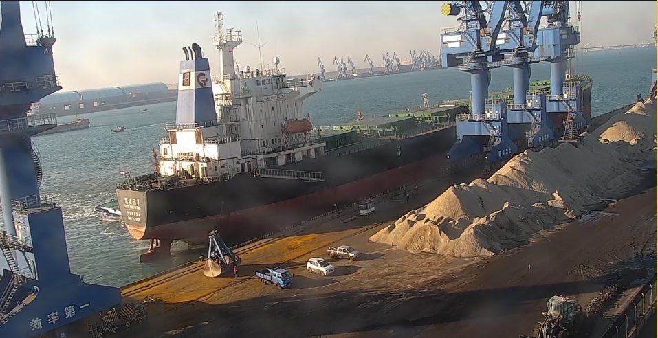

LC3 Scale-Up Keeps Clinker Substitution and SCM Logistics in Focus
Recent LC3 and SCM market signals show that lower-clinker cement is moving from pilot language toward practical scale-up. For GBFS, GGBFS and related cementitious materials, the opportunity depends on qualified material, shipment readiness and disciplined documentation.
LC3 规模化让熟料替代与 SCM 物流继续成为焦点
近期 LC3 与 SCM 市场信号显示，低熟料水泥正在从试点语言走向规模化落地。对 GBFS、GGBFS 等胶凝材料来说，机会取决于合格材料、发运准备度和严谨单证。

Recent industry discussion around limestone calcined clay cement, or LC3, points to a wider commercial shift: lower-clinker cement is becoming a practical product strategy rather than a distant decarbonization concept. Market reports on supplementary cementitious materials also show continued demand growth as buyers look for ways to reduce clinker factors while maintaining concrete performance.

1. Clinker substitution is moving into procurement
LC3, slag-based cement blends, fly ash usage and other SCM routes are all part of the same buyer requirement: reduce clinker content without making quality uncertain. As the discussion becomes more commercial, procurement teams will ask harder questions about chemistry, consistency, testing, origin and repeatable delivery.
2. SCM supply has to be shipment-ready
For GBFS and GGBFS suppliers, the opportunity is not simply that low-carbon cement needs more substitute materials. The real advantage comes when material control, stock planning, inspection, moisture management, packing choice and vessel loading can be aligned before the laycan becomes tight.

3. Logistics discipline converts technology into cargo
Dry bulk sentiment has recently been constructive, but freight windows can change quickly. Buyers planning cementitious cargoes should confirm quantity, specification, discharge port, laycan and loading method early. These details let suppliers check whether the material, berth, documents and vessel fit can move together.
Takeaway: LC3 and broader clinker-substitution momentum are good demand signals, but the trade value will belong to suppliers that can make SCM cargoes verifiable, bookable and shipment-ready.
近期围绕 LC3，即石灰石煅烧黏土水泥的行业讨论，释放出一个更大的商业信号：低熟料水泥正在从远期减碳概念，转向更可执行的产品策略。与此同时，SCM 市场报告也显示需求仍在增长，买方正在寻找降低熟料系数、同时保持混凝土性能的方法。
1. 熟料替代正在进入采购环节
LC3、矿渣水泥、粉煤灰应用以及其他 SCM 路线，本质上都对应同一个买方需求：在降低熟料含量的同时，不牺牲质量确定性。当讨论从技术概念走向商业采购，买方会更关注化学指标、稳定性、检测、来源和可重复交付。
2. SCM 供应必须具备发运准备度
对 GBFS 和 GGBFS 供应方来说，机会并不只是低碳水泥需要更多替代材料。真正的优势来自材料控制、库存计划、检验、含水管理、包装选择和船舶装载能够在 laycan 变紧之前提前统一。
3. 物流纪律把技术信号变成真实货盘
近期干散货市场情绪较为积极，但运费窗口变化仍可能很快。规划胶凝材料货盘的买方，应尽早确认数量、规格、卸港、laycan 和装载方式。这些信息能帮助供应方同步核对材料、泊位、单证和船型匹配。
结论：LC3 与更广泛的熟料替代趋势是积极需求信号，但贸易价值会属于那些能让 SCM 货盘可验证、可订舱、可发运的供应方。
Planning GGBFS or GBFS supply?
Please share quantity, specification, discharge port, laycan and loading method so material readiness and shipment execution can be checked together.
Request a quote